Contributed by Jerry Clark
Photos by Miles A. Lumbard
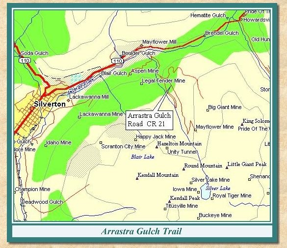
| Arrastra Gulch is the location of the earliest successful mines in the Silverton area. These mines were established in the early 1870's. At this time ore treatment was still a primitive technology, and the output from the mines was treated in arrastras. The gulch is named after these early ore refining plants. |
| The Arrastra Gulch road turns off to the right from County Road 110 just before the Mayflower Mill. It descends to the old Silverton Northern grade and crosses the Animas River. Shortly after crossing the river a road will branch off to the right leading to the site of the Aspen Mine. |
| The Aspen Mine road fords Arrastra Creek right after the turn off the Arrastra Gulch road. The steel structures are part of the Mayflower Mine tram to the Mayflower Mill. This tramway was built in the 1920's. Continuing up the Aspen road, wooden tram towers from the Silver Lake Tram can be seen. After traveling up a steep section, you'll arrive at the Aspen Mine. The road to the left at the fork leads to the top of the mine dump, the lower road to the right leads to the mine and mine camp. It is possible to continue past the Aspen Mine camp and follow this road across the face of Hazelton Mountain and down a number of switchbacks down into Silverton at the Lackawanna Mill. To continue up Arrastra Gulch, retrace the route taken to the Aspen Mine and turn right at the intersection with the Arrastra Gulch road. |
| Tram towers and tower foundations can be seen as you move up the road. The Mayflower Tram was constructed of steel, and was the last operating tramway in the gulch. The wooden structures are from the Iowa-Tiger Tram or the Silver Lake Tram. |
| A road leading off to the right as you proceed up the gulch leads to the ruins of the Iowa-Tiger Mill. The mill was built in 1900. |
| Past the turnoff for the Iowa-Tiger Mill the main road continues bearing to the right. The Little Giant Basin Road turns off to the left up several switchbacks to Little Giant Basin. This road is steep and narrow and requires four wheel drive. Remains of the Contention Tramway, which ran from the North Star Mine up in the basin to the Contention Mill across the Animas River, can be seen in a number of places along this road. Above treeline on the face of King Solomon Mountain there is a tight switchback which requires backing up to negotiate. The road runs toward the back of the basin until it reaches Gold Lake. Take a break and enjoy the view of this magnificent alpine lake nestled within the basin. |
| Returning to the main Arrastra Gulch road, continuing past the Little Giant Basin road you will pass the remains of the Little Giant Mine. The foundations of the Silver Lake Tram angle station can be seen below the road at this point. Note the V-shaped structures on the side of the mountain. These are the remain of snow slide splitters which were designed to dissipate the force of avalanches and protect the buildings in the area. Continuing up the road across the talus slopes will bring you to the end of the vehicle road. Looking up to the left you will be able to see the remains of the Mayflower Mine. The Arrastra Lake foot trail begins at this point. If you elect to hike, the trail leads to Silver Lake and the ruins of the Royal-Tiger, Silver Lake and Tiger Mines. |
|
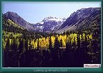 |
Looking up Arrastra Gulch
(104k) |

|
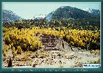 |
The foundations of the Silver Lake mill
just south of Arrastra Gulch (134k) |

|
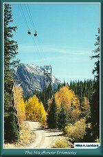 |
The Mayflower tramway
(143k) |

|
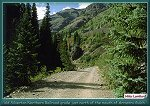 |
Old SNRR grade just north of the mouth of Arrastra Gulch
(95k) |

|
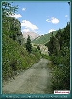 |
Old Silverton Northern Railroad grade just north of the mouth of Arrastra Gulch
(100k) |

|
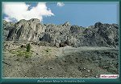 |
Mayflower Mine in Arrastra Gulch
(114k) |

|
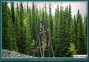 |
Old tram tower in Arrastra Gulch
(119k) |

|
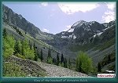 |
View of the headwall of Arrastra Gulch.
(102k) |

|
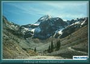 |
Looking up towards Silver Lake
(142k) |

|
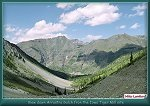 |
View down Arrastra Gulch from the Iowa-Tiger mill site.
(93k) |


|
The Narrow Gauge Circle is written, maintained,and hosted by: Mark L. Evans Send Comments to:Mark L. Evans All original materials, text, and digital images Copyright © 1996-2017 Mark L. Evans. All rights reserved. Imitation is said to be the "sincerest" form of flattery.....Please don't flatter us without permission. |